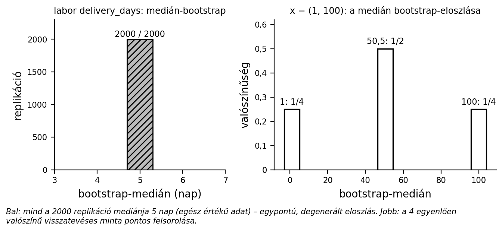

Belépő · szint: közép · idő: 60 perc · eszköz: SciPy, statsmodels
Előfeltétel: 15.2. alfejezet · Célkészség: Bootstrap a megfelelő mintavételi egységgel · Kimenet: működő kód és a labor ellenőrző tesztje.
A Northstar orders.csv 2400 rendelési sora 300 ügyfélhez
tartozik. Az üzemeltetési csapat azt kérdezi: mennyire bizonytalan a
delivery_days átlaga és mediánja? A rendelési sor
kézenfekvő megfigyelési egység, de ugyanannak az ügyfélnek több
rendelése van, tehát a sorok nem függetlenek — ezt már a 14.3. alfejezetben láttuk. A kérdés tehát nemcsak
az, hogy mekkora a pontbecslés, hanem az is, hogy melyik
szinten érdemes újramintázni.
Előzetes becslés: a szállítási napok szórása a laborban kb. 2,5 nap, így a függetlennek vélt sorokra számolt standard error nap. Ha az ügyfelen belüli szállítási idők hasonlóak volnának, a hatékony mintaméret kisebb lenne, és a valódi standard error ennek többszöröse is lehetne (ha minden ügyfélnek konstans szállítási ideje volna, kb. nap). A feladatunk ezt bootstrap segítségével ellenőrizhetővé tenni – és kideríteni, hogy a laboradatban van-e ilyen hatás.
A bootstrap (újramintázásos becslés) a megfigyelt mintát tekinti a sokaság legjobb helyettesítőjének. Ha az eredeti adatvektor , akkor -szer húzunk elemet visszatevéssel, és minden húzásra kiszámítjuk a statisztikát. A replikációk vektora alakú, és a cél nem új adat előállítása, hanem a becslő mintavételi eloszlásának közelítése. Ez a megközelítés akkor működik jól, ha a minta reprezentatív a kérdéses sokaságra nézve, és az elem cserélhető, tehát a sorrend nem hordoz releváns csoportszerkezetet.
A legegyszerűbb, percentilis (percentile) intervallum a replikációk eloszlásából számított kvantilis:
ahol esetén és a 2,5%-os és 97,5%-os kvantilis. Ez az intervallum ott működik jól, ahol eloszlása megközelítőleg szimmetrikus a pontbecslés körül, és a becslő varianciája nagyjából állandó a lehetséges -értékek mentén.
A BCa (bias-corrected and accelerated, torzítás-korrigált és gyorsított) intervallum két korrekciót vezet be. Az első a torzítás-korrekció:
ahol a standard normális eloszlás kvantilisfüggvénye, pedig indikátor. Ha a bootstrap-replikációk fele kisebb -nál, akkor . Ha a replikációk mediánja eltolódott, nem nulla.
A második, gyorsító (acceleration) tag a becslő érzékenységét méri az egyes megfigyelésekre. A jackknife becslés az -edik megfigyelés elhagyásával számolt statisztika, ezek átlaga:
A BCa a replikációk eloszlásán a -transzformált kvantiliseket igazítja: az szintű intervallum végpontjait a replikációk és kvantilisei adják, ahol
Ha , a BCa visszaesik a percentilis intervallumra. A számítása ugyanazt a gondolatot használja, mint a derivált: kis, egyetlen megfigyelésre szorítkozó perturbációra adott érzékenységet vizsgál — visszautalva a 11.1. alfejezet lokális változási rátájára. A BCa jobban kezeli a ferde eloszlásokat, de érzékenyebb a jackknife-becslések simaságára is.
Ha a megfigyelési egység pár, a páros újramintázás (paired resampling) a párokat, nem az egyedi értékeket keveri. Ha minden ügyfélhez tartozik egy előtte/utána pár: , akkor a bootstrap az párindexekből húz visszatevéssel, és a statisztikát a kiválasztott értékeken számolja. A vektor alakja , ahol az értékelhető párok száma. A párok felbontása — tehát az előtte-érték és az utána-érték külön-külön történő visszatevéses húzása — tönkreteszi a párhatást, mert olyan kombinációkat is megenged, amelyek sosem fordultak elő egy ügyfélnél.
A klaszter-bootstrap (cluster bootstrap) értelemszerűen
akkor szükséges, ha a mintában klaszterek, például ügyfelek vannak. Itt
a rendelési sorok nem cserélhetők szabadon, mert a
customer_id közös hatást visz be. A húzott egység ekkor a
klaszter, nem a sor. Ha
ügyfél van, és a
-edik
ügyfélnek
rendelése, akkor minden bootstrap-replikációban
klasztert húzunk visszatevéssel, majd az összes kiválasztott ügyfél
összes sorát bevesszük a mintába:
Itt
a
-edik
húzásban szereplő klaszterindexek multihalmaza, elemszáma
.
Figyeljünk arra, hogy a húzott sorok száma reprodukciónként változhat,
mert az ügyfelek rendelésszáma különböző. A pontbecslés továbbra is a
rendelésszintű átlag; a standard error viszont már tükrözi a
klasztereken belüli függést. Ha a delivery_days ügyfélen
belül hasonló, a sor-szintű bootstrap alábecsüli a bizonytalanságot, a
klaszter-bootstrap pedig szélesebb intervallumot ad.
delivery_days oszlopán a két módszer ugyanazt adja (SE
0,0497), mert ott nincs klaszterhatás.A reprodukálhatósághoz a véletlenszám-generátort (rng, random number
generator) explicitül meg kell adni. A
np.random.default_rng(seed) modern Generator
példányt hoz létre; a scipy.stats.bootstrap
random_state argumentuma elfogad ilyen példányt is. A régi
np.random.RandomState új kódban kerülendő: örökölt
(legacy), befagyasztott API, amelyet a NumPy csak a kompatibilitás miatt
tart meg. (Újabb SciPy-verziók a random_state helyett az
rng kulcsszót ajánlják; a lenti kód SciPy 1.18.1-en
figyelmeztetés nélkül fut, más verzióban ez eltérhet.) A seed rögzítése
mellett ugyanazon a gépen és csomagverzión belül a húzások
reprodukálhatók; más NumPy-verzió vagy platform esetén bitazonos
eredményt nem ígérhetünk. Statisztikailag a lényeg az, hogy a Monte
Carlo ingadozás
nagyságrendű legyen, ezért a
–
replikáció ésszerű intervallumstabilitást ad.
Degeneráltság (degeneracy) akkor lép fel, ha a bootstrap-replikációk eloszlása túl kevés egyedi értékre koncentrálódik. Klasszikus példa a két elemből álló minta mediánja: az elemből húzott bootstrap-minták mediánjai közt csak az , és értékek fordulnak elő. A bootstrap eloszlás ilyenkor lépcsős, a percentilis intervallum nem folytonos, és a lefedettség értelmezése sérül. Ugyanezt látjuk extrém kvantiliseknél, például a minimum bootstrap becslésénél. A degeneráltság figyelmeztetés: a bootstrap nem varázsol folytonos valószínűségi eloszlást egy túl kicsi mintából.

delivery_days
mediánjának mind a 2000 bootstrap-replikációja 5 nap (egész értékű
adat), az
minta mediánja pedig csak az 1; 50,5; 100 értéket veheti fel 1/4, 1/2,
1/4 valószínűséggel.A bootstrap nem minden mintán ad értelmezhető intervallumot. A
scipy.stats.bootstrap BCa-módszere például akkor adhat
nan-t, ha a minta konstans (a jackknife-eltérések mind
nullák, így
),
vagy ha a replikációk mind a
egyik oldalán vannak, és ezért
(a
önmagában nem hiba, ekkor a BCa a torzításkorrigált intervallumra
egyszerűsödik), a klaszter-bootstrap pedig két klaszternél csak néhány
lehetséges újramintát lát. A helyes protokoll előre rögzített:
| Előfeltétel | Ha sérül | Fallback |
|---|---|---|
| nem konstans minta | minden érték azonos | not_estimable, nincs CI |
| a BCa korrekciói számíthatók | nem számítható (konstans jackknife) vagy végtelen | percentile |
| elég klaszter | < 10 klaszter | klaszter-percentile + figyelmeztetés |
| percentile értelmezhető | szélső/egypontú eloszlás | basic vagy not_estimable |
| a CI nem hamis bizalom | minden fallback után is bizonytalan | figyelmeztetés a jelentésben |
A konstans 0/1 minta például not_estimable: a bootstrap
[0,0] intervalluma azt sugallná, hogy a paraméter biztosan 0, pedig csak
a minta nem tartalmaz változatosságot. Két klaszter esetén a
klaszter-bootstrap csak
lehetséges újramintát használ, ezért a kapott intervallum nem tekinthető
megbízhatónak; a fallback ilyenkor is figyelmeztet, nem „magabiztos”
CI-t ad.
import numpy as np
def choose_method(values, clusters=None, requested="bca"):
values = np.asarray(values, dtype=float)
if values.size == 0 or np.all(values == values[0]):
return {"status": "not_estimable", "method": None}
if clusters is not None and len(clusters) < 10:
return {"status": "warning_small_clusters", "method": "cluster_percentile"}
return {"status": "ok", "method": requested}
print(choose_method(np.zeros(20))) # not_estimable
print(choose_method(np.arange(20.0), clusters=[0, 1])) # warning_small_clusters
print(choose_method(np.arange(20.0))) # ok, bcaA lab/bootstrap_fallback.py acceleration(),
choose_method(), percentile_ci() és
report() függvényei ezt a döntési fát adják; a
tests/test_bootstrap_fallback.py a konstans minta
not_estimable, a két klaszter
warning_small_clusters és a normál minta
ok/bca állapotát, valamint a konstans mintára dobott
ValueError-t ellenőrzi. A fallback nem javítja meg a
mintát; csak megakadályozza, hogy a bizonytalanságot hamis intervallum
takarja el.
A következő szkript a lab/ munkakönyvtárból futtatható:
python bootstrap_delivery.py. Az input a tiszta
data/orders.csv; a cél a delivery_days
átlagának és mediánjának intervalluma. A seed 20261020, a
sor-szintű replikációk száma
,
a klaszter-bootstrapé
.
A SciPy bootstrap hívás magas szintű API, de a
klaszter-változathoz kézi hurkot írunk, mert a SciPy nem tud
customer_id szerinti klasztert húzni.
import numpy as np
import pandas as pd
from scipy import stats
orders = pd.read_csv("data/orders.csv", parse_dates=["order_ts"])
y = orders["delivery_days"].to_numpy(dtype=float)
customer = orders["customer_id"].to_numpy()
n = y.size
print(f"rows={n}")
print(f"mean={y.mean():.3f}, median={np.median(y):.1f}, "
f"sd={y.std(ddof=1):.3f}")
# Sor-szintű bootstrap: itt minden rendelési sort függetlennek tételezünk fel.
rng = np.random.default_rng(20261020)
B = 2000
boot_mean_perc = stats.bootstrap(
(y,), np.mean, n_resamples=B, method="percentile",
random_state=rng, confidence_level=0.95,
)
boot_mean_bca = stats.bootstrap(
(y,), np.mean, n_resamples=B, method="BCa",
random_state=rng, confidence_level=0.95,
)
boot_med_perc = stats.bootstrap(
(y,), np.median, n_resamples=B, method="percentile",
random_state=rng, confidence_level=0.95,
)
for name, res in [
("row mean percentile", boot_mean_perc),
("row mean BCa", boot_mean_bca),
("row median percentile", boot_med_perc),
]:
lo, hi = res.confidence_interval
print(f"{name:22s} [{lo:.3f}, {hi:.3f}] "
f"se={res.standard_error:.3f}")
# Klaszter-bootstrap: a húzott egység az ügyfél, az összes rendelésével együtt.
customers, inverse = np.unique(customer, return_inverse=True)
m = customers.size
cluster_rows = [np.flatnonzero(inverse == j) for j in range(m)]
B_cluster = 1000
cluster_mean = np.empty(B_cluster)
cluster_median = np.empty(B_cluster)
for b in range(B_cluster):
chosen = rng.integers(0, m, size=m)
rows = np.concatenate([cluster_rows[j] for j in chosen])
sample = y[rows]
cluster_mean[b] = sample.mean()
cluster_median[b] = np.median(sample)
for name, arr in [
("cluster mean percentile", cluster_mean),
("cluster median percentile", cluster_median),
]:
lo, hi = np.quantile(arr, [0.025, 0.975])
print(f"{name:22s} [{lo:.3f}, {hi:.3f}] "
f"se={arr.std(ddof=1):.3f}")A szkript futtatott kimenete (lab/data, NumPy 2.2.6, SciPy 1.18.1; a seedelt értékek más verzióban kismértékben eltérhetnek):
rows=2400
mean=5.236, median=5.0, sd=2.473
row mean percentile [5.139, 5.334] se=0.050
row mean BCa [5.138, 5.341] se=0.051
row median percentile [5.000, 5.000] se=0.000
cluster mean percentile [5.134, 5.329] se=0.050
cluster median percentile [5.000, 5.000] se=0.000A laborban a sor- és a klaszter-bootstrap standard errorja
megegyezik, mert a szimulált szállítási idők ügyfélen belül
gyakorlatilag függetlenek (az első és a második rendelés szállítási
idejének korrelációja kb. 0,03). A klaszterhatást a szintetikus, ICC-vel
generált példa (14.3. alfejezet) mutatja: a
bootstrap-egység megválasztása akkor számít, ha van ügyfélszintű hatás.
A medián intervalluma degenerált: a delivery_days egész
szám (1–13 nap), a medián 5, és szinte minden bootstrap-medián is 5,
ezért az intervallum
,
a standard error 0. Ez a fenti degeneráltsági eset pontos példája;
ilyenkor a medián bizonytalanságát például rendezett mintaelemekre épülő
(binomiális) kvantilis-intervallummal érdemes jellemezni.
A számok mögötti döntés a húzott egység. A sor-szintű bootstrap minden replikációban rendelést húz, és úgy kezeli a sorokat, mintha függetlenek lennének. A klaszter-bootstrap ezzel szemben minden replikációban ügyfelet húz, és az ügyfél teljes rendeléstörténetét viszi be. A két eljárás ugyanazt az eredeti rendelési átlagot használja kiinduló pontbecslésként. A klaszter-bootstrap replikációinak rendelésenként súlyozott átlaga azonban véletlen klaszterméretek mellett nem szükségképpen torzítatlan a megfigyelt átlagra; az értelmezés a célpopulációtól és a klaszterméretek kezelésétől is függ. A standard error viszont akkor különbözik, ha az ügyfelen belüli szállítási idők korrelálnak.
Ellenőrző invariánsok:
cluster_rows lista minden eleme nem üres, mert minden
customer_id jelen van az orders táblában.delivery_days a laborban csak enyhén
ferde, ezért a két átlag-intervallum itt csaknem egyezik ([5,139; 5,334]
és [5,138; 5,341]).Klaszteres újramintázásnál külön rögzítsük, hogy ügyfélátlagot vagy rendelésátlagot kívánunk becsülni. Egyenlőtlen klaszterméretek mellett ez más súlyozást és eltérő célparamétert jelenthet.
1. Értelmezés. Érvelj amellett, hogy a
delivery_days esetén miért az ügyfél a helyes
bootstrap-egység! Mondj egy olyan feltételt, amely mellett a sor-szintű
és a klaszter-bootstrap azonos standard errorhoz vezet.
2. Implementálás. A Northstar
orders.csv-ből válaszd ki azokat az ügyfeleket, akiknek
legalább két rendelésük van. Párosítsd minden ilyen ügyfél első két
rendelését időrendben, számítsd ki a
= második delivery_days − első delivery_days
különbséget, majd adj páros resamplinggel 95%-os percentilis
intervallumot az átlagos
-re.
Használj
replikációt és rögzített seedet.
3. Hibakeresés. Valaki a páros feladatot így próbálta megoldani:
first_boot = first[rng.integers(0, first.size, size=first.size)]
second_boot = second[rng.integers(0, second.size, size=second.size)]
repl_b = second_boot.mean() - first_boot.mean()Mi a hiba? Hogyan változtatja ez meg az átlagos különbség bizonytalanságát? Javítsd a kódot.
4. Megváltozott feltétel. A külön kísérleti
assignments.csv és outcomes.csv 300 ügyfélen a
conversion_7d kimenetet tartalmazza. A beavatkozási cél a
treatment és control értékek átlagának
különbsége. Ebben az adatban minden ügyfél pontosan egyszer randomizált,
tehát a húzott egység az ügyfél. Készíts rétegzett (csoporton belüli)
bootstrapet
replikációval a hatáskülönbség 95%-os percentilis intervallumára; a
csoportméretek replikációnként rögzítettek. Ellenőrizd, hogy a
bootstrap-minta minden replikációban tartalmazhatja ugyanazt az ügyfelet
többször is, de nem használhatja a rendelési sorokat.
1. megoldás. Az ügyfél a helyes egység, mert a
rendelési sorok ugyanazon ügyfélhez tartozó kimenetei közös ügyfélhatást
hordozhatnak; ezt a függetlenség és csoport
alfejezetben az ICC fogalmával láttuk. A sor-szintű bootstrap akkor adna
hasonló standard errort, ha a delivery_days ügyfélen belül
független volna, és az ügyfélhatás nem befolyásolná a kimenetet. Ha a
klaszteren belüli korreláció nulla és a húzott sorok száma nagyjából
azonos marad, a két replikációeloszlás közelíti egymást. Az ellenőrző
gondolat: tegyük fel, hogy minden ügyfélhez konstans szállítási idő
tartozna. Ilyenkor a sor-szintű bootstrap standard errorja kb.
,
a klaszter-bootstrapé kb.
,
azaz kb.
-szor
nagyobb: a sorok az ügyfelenkénti, átlagosan nyolcszoros redundanciát
elfedik. A laboradaton a helyzet a másik véglet: ott a két standard
error megegyezik (0,050).
2. megoldás. A groupby művelet először
azokat az ügyfeleket tartja meg, akiknek legalább két rendelése van,
majd a rendezett order_ts alapján az első két rendelést
párosítja.
import numpy as np
import pandas as pd
orders = pd.read_csv("data/orders.csv", parse_dates=["order_ts"])
customer_id = "customer_id"
eligible = orders.groupby(customer_id).size()
eligible = eligible[eligible >= 2].index
sub = orders[orders[customer_id].isin(eligible)].sort_values(
[customer_id, "order_ts"]
)
first = sub.groupby(customer_id)["delivery_days"].first().to_numpy()
second = sub.groupby(customer_id)["delivery_days"].nth(1).to_numpy()
d = second - first
rng = np.random.default_rng(20261020)
B = 2000
repl = np.empty(B)
for b in range(B):
idx = rng.integers(0, d.size, size=d.size)
repl[b] = d[idx].mean()
lo, hi = np.quantile(repl, [0.025, 0.975])
print(f"pairs={d.size}, mean diff={d.mean():.3f} "
f"CI=[{lo:.3f}, {hi:.3f}]")Futtatva (lab/data, seed 20261020):
pairs=299, mean diff=0.237 CI=[-0.134, 0.656]. A 300
ügyfélből 299-nek van legalább két rendelése; az intervallum tartalmazza
a nullát, tehát az első és a második rendelés szállítási ideje között
nem mutatható ki különbség. Az ellenőrző invariant: d.size
pontosan azoknak az ügyfeleknek a száma, akiknek legalább két rendelésük
van; a replikációk átlaga közel van d.mean()-hez. A
szelektált részsokaság nem reprezentálja a csak egy rendeléssel
rendelkező ügyfeleket — ezt explicit feltételként kell kimondani a
jelentésben.
3. megoldás. A hibás kód a first és a
second tömböket külön-külön húzza újra. Ezzel a párok
összerendelése elvész: egy ügyfél első rendeléséhez egy másik ügyfél
második rendelése is kerülhet. Ha a páron belüli értékek pozitívan
korrelálnak, a párosítás csökkenti a különbség szórását, tehát a hibás
verzió szélesebb, konzervatívabb intervallumot ad, de rossz célt mér:
olyan kombinációk is szerepelnek, amelyek a valós ügyfélúton nem
fordultak elő. A javítás az, hogy a
különbségvektort húzzuk újra, mint a 2. megoldásban. Párhuzamos
ellenőrzés: a javított kód replikációinak szórása kisebb, mint a hibás
kódból számolt szórás, ha a párkorreláció pozitív. A laboradaton a két
rendelés szállítási idejének korrelációja csak kb. 0,03, ezért itt a két
változat között gyakorlatilag nincs különbség; erős párkorrelációnál a
különbség nagy.
4. megoldás. A külön kísérletben minden ügyfél
egyszer szerepel, így a megfelelő húzás a customer_id
szintű, csoporton belüli bootstrap:
import numpy as np
import pandas as pd
assign = pd.read_csv("data/assignments.csv")
out = pd.read_csv("data/outcomes.csv")
df = assign.merge(out, on="customer_id", validate="one_to_one")
control = df.loc[df["variant"] == "control", "conversion_7d"].to_numpy()
treatment = df.loc[df["variant"] == "treatment", "conversion_7d"].to_numpy()
rng = np.random.default_rng(20261020)
B = 2000
repl = np.empty(B)
for b in range(B):
c = control[rng.integers(0, control.size, size=control.size)]
t = treatment[rng.integers(0, treatment.size, size=treatment.size)]
repl[b] = t.mean() - c.mean()
lo, hi = np.quantile(repl, [0.025, 0.975])
print(f"ITT estimate={treatment.mean()-control.mean():.4f} "
f"CI=[{lo:.4f}, {hi:.4f}]")Futtatva (lab/data, seed 20261020): a kontrollcsoport 154, a kezelt
csoport 146 ügyfél (konverzió 0,2532, illetve 0,2534), a kimenet
ITT estimate=0.0002 CI=[-0.1001, 0.1004]. A labor
szintetikus kísérletében tehát nincs kimutatható hatás. A nullát
tartalmazó intervallum nem bizonyítja, hogy nincs hatás, csak azt
mutatja, hogy a 300 fős kísérlet pontossága kb. ±0,10. Az ITT-nevező az
összes randomizált ügyfél; a replikációk csak ügyfeleket húznak. A
replikációk átlaga közelíti a becsült hatás nagyságát; ha ettől a
repl átlaga nagyon eltér, a húzási logikában hiba van. A
merge validate="one_to_one" ellenőrzi, hogy a
táblák valóban ügyfélszintűek.
A leggyakoribb félreértés az, hogy a bootstrap korrigálja a rossz adatfelvételi folyamatot. Ez nem igaz. Ha egy elégedettségi mérést csak panaszos ügyfelek töltenek ki, akkor a 95%-os bootstrap-intervallum továbbra is a panaszos rétegre vonatkozik, nem az összes ügyfélre. A növelése csak a Monte Carlo hibát csökkenti, a szelekciós torzítást nem.
A bootstrap a nagyon kicsi mintát sem varázsolja megbízhatóvá. Az
kételemes minta mediánjának bootstrap-eloszlása mindössze három
lehetséges értékre támaszkodik; bármilyen nagy
mellett is degenerált marad. A delivery_days laborban is
ellenőrizni kell, hogy a replikációk eloszlása elég sok egyedi értéket
tartalmaz-e; a kis minta vagy extrém kvantilis degeneráltsága
megbízhatatlanná teszi a percentilis intervallumot.
Kérdezd meg magadtól: mi a húzott egység a saját feladatodban, sor
vagy ügyfél? A scipy.stats.bootstrap magas szintű hívása a
sor- vagy elemszintű függetlenséget feltételezi; klaszter esetén kézi
hurkot kell írni. A BCa-t használva ellenőrizd, hogy a
jackknife-becslések simán változnak-e; a medián ilyen szempontból nem
ideális, mert a jackknife érzékenysége ugrálhat. A seed rögzítése a
statisztikai reprodukálhatóság minimális feltétele; a 3.3. alfejezet tanulsága szerint a natív
SciPy-környezet verzióját is rögzíteni kell, ha valaki bitazonosan
szeretné újrafuttatni a kódot. A konfidenciaszint továbbra is az eljárás
ismételt mintavételi lefedettségére vonatkozik, nem a konkrét
intervallum valószínűségére, ahogyan ezt a 15.2.
alfejezetben tárgyaltuk.
A bootstrap a megfigyelt mintából visszatevéses húzással közelíti a becslő mintavételi eloszlását. A percentilis intervallum a replikációk kvantiliseit veszi, a BCa emellett torzítás- és ferdeségkorrekciót alkalmaz. Páros adatnál a párokat, ismételt ügyféladatnál az ügyfelet kell újramintázni; a sor-szintű húzás a klaszteren belüli függés miatt alábecsüli a standard errort. A seed rögzítése szükséges, a degenerált replikációeloszlás pedig figyelmeztetés a kis mintára vagy extrém statisztikára. A következő alfejezetben a predikciós, paraméter- és Monte Carlo intervallumok közötti fogalmi határokat tisztázzuk.